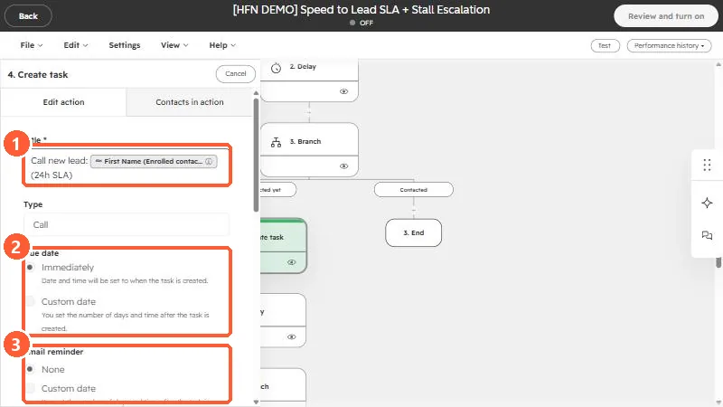

Short answer
Add Create task, then set a title (it can include tokens such as the enrolled contact's first name), a type (here, Call), a due date (immediately when the task is created, or a custom number of days and time after creation), and an email reminder (none, or a custom time). In my speed-to-lead example the task title is "Call new lead" plus the contact's first name and the SLA window, so the rep knows why it exists.
1. Title, type, due date, reminder
Click a Create task action in a workflow in Workflows. The top of its panel has the settings you will use most.


- Title. A required field. The title can include a personalization token, shown as a chip, such as the First Name of the enrolled contact. A good title says what to do and for whom. Mine reads "Call new lead" followed by the contact's first name and the SLA, so it is clear in a task list.
- Type. Call, Email, or To-do.
- Due date. Either Immediately, which sets the date and time to when the task is created, or a Custom date that is a number of days and a time after creation.
- Email reminder. None, or a custom reminder set as a number of days and a time after the task is created.
2. Pair it with a check
A task for every enrolled record can bury a rep. In the speed-to-lead workflow the task sits behind a branch, so it is only created when the lead has not been contacted. See build a speed-to-lead workflow and delay and branch actions.
- Set the due date to match the promise you made, such as within a day.
- Make the title specific enough that the rep does not have to open the task to understand it.
- Check who the task is assigned to, further down the panel.
The rest of the panel, including assignment and the task body, is below what fits on one screen. Open the action in your own workflow to see all of it.